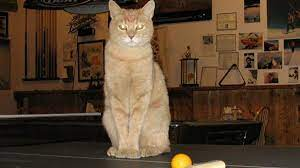
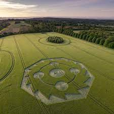
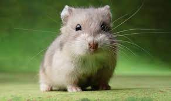
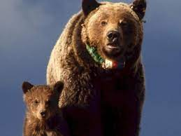

-
Suggested for you
Cat Elected Mayor of Tiny Russian Town After Human Candidates Disqualified
Siberian villagers in Novosibirsk Oblast just elected a ginger tabby cat named "Marsik" as their new mayor in a surprise development. The election took place last week after both human candidates were disqualified for exceeding campaign spending limits. With no eligible alternatives, residents jokingly nominated Marsik, who often sunbathed outside the town hall and was known for his calm demeanor. To everyone's surprise, Marsik received the most votes in a write-in campaign, securing his position as the feline leader. While the legality of this unorthodox election is still being debated, Marsik has already begun his mayoral duties with the help of a human translator. His first executive order? More scratching posts and catnip for all feline residents! Will Marsik usher in a new era of prosperity for the town? Only time will tell, but one thing's for sure: this is a purrfectly bizarre news story!
-
Featured
Breaking News: Mysterious Crop Circles Discovered in Rural England
A series of intricate crop circles have been discovered in a wheat field outside the small village of Wiltshire in rural England, leaving locals and experts baffled. The formations, ranging from simple geometric shapes to more complex patterns resembling ancient symbols, appeared overnight, sparking widespread speculation about their origins. Eyewitnesses reported strange lights and a low humming sound in the vicinity the night before the crop circles were found, fueling theories of extraterrestrial involvement. However, skeptics argue that these formations could be the work of talented pranksters or artists seeking attention. Authorities have cordoned off the area for further investigation, while researchers and ufologists are flocking to the scene to analyze the phenomenon. Drone footage and aerial photographs captured by local media reveal the sheer scale and intricacy of the crop circles, adding to the mystery surrounding their creation. As speculation mounts, locals are divided between those who view the crop circles as a harmless curiosity and others who fear they may signal something more ominous. Meanwhile, scientists are eager to examine the crop samples and soil composition within the circles to shed light on this perplexing phenomenon.
-
Featured
Tiny Hamster Takes Heroic Leap to Save Family from Kitchen Fire
In a daring act of bravery, a hamster named Pipkin from Springfield, Oregon, became an overnight hero after rescuing his family from a kitchen fire last Tuesday. The blaze, sparked by an overheated toaster, quickly engulfed the hamster cage, trapping Pipkin and his siblings inside. However, Pipkin, known for his adventurous spirit, managed to chew through the plastic bars of his cage and escape. He then scurried to the nearby fire alarm and, using his tiny teeth, triggered the pull lever, alerting the homeowners and saving the day. "We were having breakfast when the alarm went off," said homeowner Sarah Johnson. "At first, we thought it was a false alarm, but then we saw smoke coming from the kitchen. When we opened the door, we were shocked to see Pipkin standing there, looking like he'd just accomplished an Olympic feat!" Firefighters arrived promptly and extinguished the flames before any major damage occurred. Pipkin and his family were unharmed, thanks to his quick thinking and determination. The heroic hamster has since been praised for his courage and is being hailed as a local celebrity. "Pipkin is a true hero," said Springfield Fire Chief Michael Thompson. "His actions remind us that even the smallest creatures can have the biggest hearts".
-
Featured
Bear Cub Hitches a Ride on Delivery Drone, Takes Town for a Whirlwind Tour
Imagine ordering a pizza, only to have it delivered by a flying… bear cub? That's exactly what happened in a small town in Colorado this week, when a mischievous black bear cub managed to snag a ride on a delivery drone. The incident began when a local pizza restaurant sent out a drone delivery carrying a piping hot pepperoni pie. As the drone buzzed through the neighborhood, it unknowingly attracted the attention of a curious cub who was exploring nearby. The cub, with impressive agility, leaped onto the drone mid-flight, hitching a ride on its journey. The surprised drone operator quickly realized his unexpected passenger and carefully steered the drone back towards the restaurant. Thankfully, the cub remained calm throughout the flight, enjoying the scenic tour of the town from its unique vantage point. Upon landing, the restaurant staff safely coaxed the cub off the drone and reunited it with its mother, who had been anxiously searching for her adventurous offspring. While the incident caused a stir in the town, no harm came to the cub, the pizza (which was delivered to a different customer), or the drone. The story has become a local sensation, with many residents calling it the "cutest delivery ever." This lighthearted news story is just one example of the many strange and unusual events that happen around the world every day. It serves as a reminder that even in our ordinary lives, there's always room for a little bit of wonder and excitement.